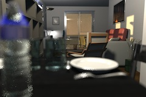
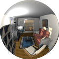
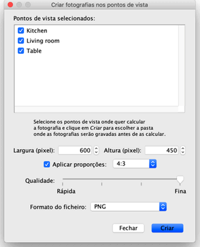

Nos dois melhores níveis de qualidade, a imagem final depende da localização e potência das luzes. Por predefinição,
a imagem é calculada ao meio-dia com luzes adicionais colocadas no centro do tecto de cada divisão.
Se quer controlar melhor as fontes de luz na sua casa, poderá desmarcar a caixa Adicionar luzes de tecto, adicionar objectos da
categoria Iluminação na planta e ajustar a sua potência no seu indicador próprio ou
editando os seus atributos. A luz do Sol, a cor e a direcção dos seus raios, dependem da
hora do dia e da data seleccionada, mas também da direcção do Norte, da localização geográfica e do
Meridiano, sendo os últimos parâmetros geridos pela bússola. O brilho global da imagem
depende também do nível de brilho definido no painel de Modificação da vista 3D.
Finalmente, a janela Criar fotografia permite-lhe escolher entre os quatro seguintes tipos de lentes:
 |
|
 |
Lente Predefinida
|
Lente Profundidade de campo |
|  |
|
 |
| Lente Grande-angular |
Lente Panorâmica |
Se quer calcular um grupo de fotografias num mesmo lote, armazene os pontos de vista em que está interessado. Escolha
Vista 3D > Armazenar ponto de vista... e seleccione Vista 3D > Criar fotografias em pontos de vistas.... Surge uma
caixa de diálogo onde pode escolher o tamanho e a qualidade da imagem e o formato do ficheiro das imagens, antes de as calcular e
gravar numa pasta à sua escolha. Nos dois melhores níveis de qualidade, a data/hora e a lente usada para um determinado ponto
de vista serão os últimos valores que introduziu na janela Criar fotografia no momento em que armazenou ou modificou
esse ponto de vista. Se nunca abriu a janela Criar fotografia ou alterou a data/hora naquela janela, a data/hora será
meio-dia no dia em que a casa foi criada.
 |